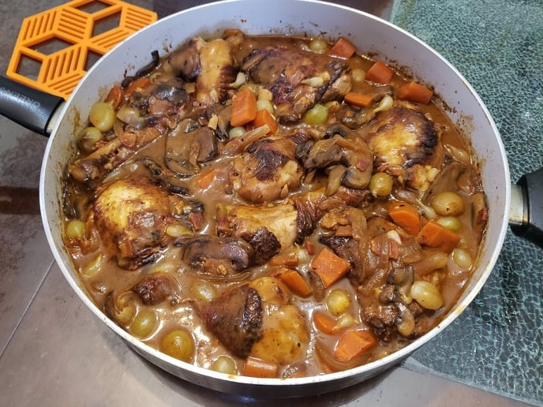

Coq Au Vin

Ingredients:
- 4 Chicken thighs, bone-in and skin-on
- 4 Chicken drumsticks, bone-in and skin-on
- 1 1/2 cups Red wine
- 1 cup Chicken stock
- Optional: 1/4 cup Brandy
- 3 slices Thick bacon, diced into 1/2 inch pieces
- 1 medium Onion, sliced
- 4 medium Carrots, halved and thickly sliced, 1 inch pieces
- 4 cloves Garlic, minced
- 2 tbsp Tomato paste
- 2 tsp Fresh thyme leaves
- 8 oz Mushrooms, thickly sliced
- 1-2 cups Pearl onions, peeled
- Beurre manie (2 tbsp Flour + 2 tbsp Softened butter)
Instructions:
- Place the chicken thighs and drumsticks in a medium-sized container and pour in the wine, chicken stock, and brandy, if using. Let marinate while preparing the other ingredients.
- Add the bacon to a large pan over medium-high heat. Cook until the bacon is crispy, about 8 minutes. Then remove it from the pan with a slotted spoon.
- Remove the chicken from the marinade and reserve the marinade. Pat the chicken dry with paper towels. In batches, place the chicken in the pan, skin side down. Sear until it is golden on both sides, about 3-5 minutes each side, then remove the chicken from the pan. Pour all but 2 tablespoons of the bacon/chicken oil into a heatproof dish and set it aside.
- Add the sliced onion and carrots to the pan and let them cook until the onion is caramelized and golden brown, about 7-8 minutes. Add the garlic to the pan and let it cook for 1 minute.
- Push the vegetables to the side of the pan and add the tomato paste to the empty side. Cook the tomato paste until it is fragrant and begins to darken. Pour the reserved wine marinade into the pan and mix together the vegetables, scraping the bottom to deglaze the pan.
- Nestle the chicken into the pan and sprinkle the thyme over top. Cover the pot, turn the heat to low, and simmer for 20 minutes.
- Pour 1 tablespoon of the reserved oil into a separate large pan. Add the mushrooms and saute over medium-high heat until brown, about 10 minutes.
- Add the pearl onions to the pot with the chicken and cook for 10 minutes more.
- Remove the chicken from the pan then add the beurre manie, bacon, and mushrooms. Stir it into the sauce and let it thicken. Season to taste with salt and pepper. Add the chicken back in. The chicken will be cooked by now, but for more tender chicken, optionally simmer for 10-15 more minutes.
- Sprinkle with more fresh thyme to garnish.